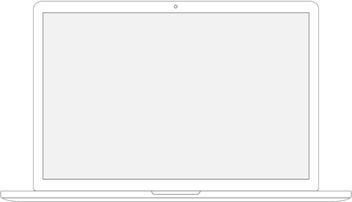
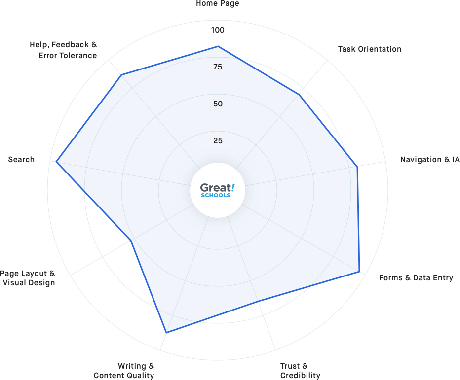
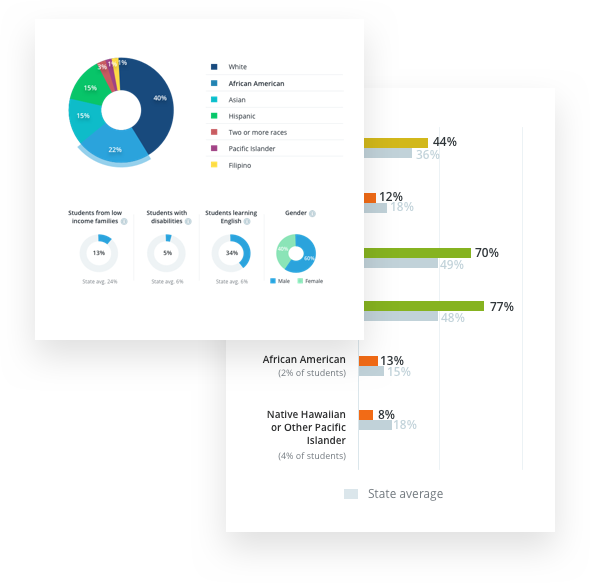
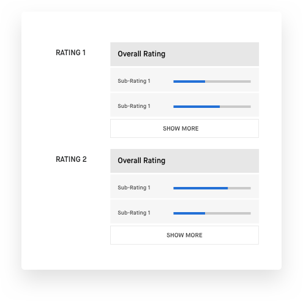
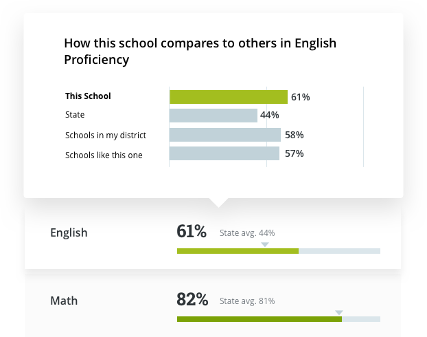

Simplify navigation to showcase the most important data upfront
Greatschools
Helping millions of parents get a great education for their child
The Story
GreatSchools is the leading national nonprofit empowering parents to unlock educational opportunities for their children. GreatSchools provides school information and parenting resources to help millions of American families choose the right school, support learning at home, and guide their children to great futures. We were tasked with a complete re-design of the most trafficed page on the site, which was the school profile page.
40M
Yearly Users
271K
School Profiles
The Challenge
User research indicated that the school profiles had become difficult to navigate over several iterations and new feature additions. We were brought on board to solve several design issues.

All this had to be done without impacting the existing SEO numbers for the page.
The Solution
Digging deeper
We needed to dig deeper into the metrics and research to really understand the core user issues. We applied a holistic approach to examine the site. We audited the site, based on use case, users journeys to created a strategic road map to address those issues.
Heuristic guidelines evaluation

The questions
How to give users the most important content up front?
How to streamline navigation across the entire page content?
How to encourage users to leave more high quality reviews?
Holistic approach
The importance of the first glance
GreatSchools aggregates 80 data points to rank schools in a fair and balanced manner. Presenting that much information at one time would overwhelm users. The challenge was to present the easiest, most relevant data to users up front, then provide mechanisms for them to discover more and dig deeper on their own.

It's all about data presentation
We tested various combinations of data presentation and discovery models.

Progressive disclosure eases data overload
Organized related metrics into groups and presented them as shelves that the user could quickly scan through.
Analyzed usage to understand the most highly used groups of metrics and the datapoints within that group.
Designed progressive disclosure so that the most important datapoints were presented up front, with the option for the user to dig deeper into the secondary or tertiary metrics.
Enhanced the visual treatment to keep the page clean, clear and digestable.
Designed the page groud up to be mobile optimized.

Dig deeper without losing context
When users find interesting data points, they naturally want to dig deeper. It is important to present more information to the user within the context of the data they are looking at. We designed Pop-Hovers and Pop-Outs to reduce click paths and let the use focus on data.
Higher quality user reviews increase engagement
User reviews play a key role in influencing a parent's perception about a school. School profiles with a large amount of higher quality reviews were proven to have more engagement. Beside auditing the review section, we looked closely at Foresee data to identify ways to enoucarage users to provide higher quality reviews.

Improve Visibility
A persistent CTA in the side bar allows users to write a review anytime, anywhere within the profile page.
Streamlined review acquisition flow
Combining multi topic inputs into a single flow to increase readability and ease of use.
Smarter UI
Better readability, clear visual cue and a dynamic UI, helps users to finish compelling reviews in less time.
Testimonials
"Wow, this is very informative. I've never seen anything like this actually. Very detailed. So what ever my child is interested in the most. I can actually find the school that will fit him best. This is awesome."
ErisTay
Female, 32
I love the website where I can find an ideal school for my son... I believe that the section was well put together and it focused on what I believe is the most important while looking for a school.
Ashley Martinez
Female, 25
Overall I have had a very positive experience. I definitely found this to be one of the easier to use review type system here.
ROCMom
Female, 50